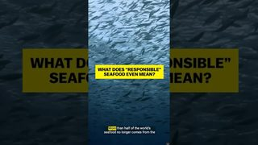
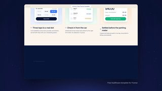
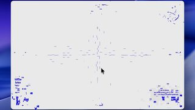
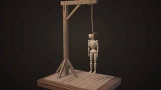
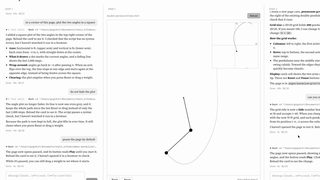
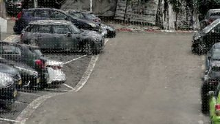
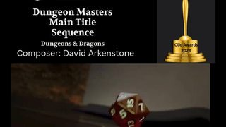

点封面在页面里播放（Vimeo / YouTube / X 需要代理；Vimeo 若没自动开始，再点一下播放键）。觉得好就点「喜欢」，有想法就写在下面的框里保存，我每天出日报前会读，存进偏好和审美库；会多找同类，但每天仍保持类型分散。
目录 01 Polar — It works while you don't02 Bolt（Codevember Day 21）03 Tension（Codevember Day 14）04 AI Ui(s)05 Karnak — Design studio06 What Happens If We Spin the Earth Twice as Fast?－ 看过但没选进今天日报拆 细拆：Dominik Mészáros 为 Polar 做的 12 秒广告——左边用时钟标出你在忙什么，右边用卡片叠出来产品同时在干什么，白天到夜里只换一套颜色
01 字体版式 UI动效 转场
Polar — It works while you don't
Dominik Mészáros（@dom_meszaros） · X 2026-11-24 【看过视频】
X 12.0 秒成片，完整看过（看片工具）
字体未识别（几何无衬线，中等粗细，不能确定）
白天底约 #F3EFE9，夜里近黑 #0C0C0C，强调色是土橘色 #C66D46（标题后半句、钟上的弧、卡片里的重点字）
好在哪 12 秒。左边一直是标题 it works / while you don't. 和下方一个大圆钟。右边是一张卡片。10:00 你在开会，右边是会议画面和报告；15:30 你还在拖延，右边换成山谷照片；03:00 你睡着了，右边是夜里的锁屏通知。卡片用前后叠加深的方式换，白天米色底在进夜里时一起变成近黑，标题也反成白字可借 讲「它在你做别的事时工作」，不要先列功能。左锁定一个钟和一句短标题，右面只换卡片。一天只设三四个时刻，底色从浅到深切一次就够。下面有细拆
展开全文
02 代码动画 3D质感
Bolt（Codevember Day 21）
grgrdvrt（@grgrdvrt） · X 2026-11-24 【看过视频】
21.3 秒成片，完整看过（看片工具）
无字
主色是黑、闪电的冷白、草地绿和木头的暖棕
好在哪 21.3 秒。黑暗里一块带木头边的迷你草地，头顶一朵体积云在下雨，一道白闪电打在草地中央的焦痕上。镜头缓缓绕着转，没有切。闪电会忽明忽灭，像接触不良；灭的时候只剩底下一点暖光。光标点一下，伴随着开关的咔哒声，闪电又亮起来，随即再次抖动可借 讲一个自然现象时，可以做成黑暗里的一小块剖面：只留草地、云和闪电，背景全部去掉。主光就用现象本身（这里是闪电），关掉以后场面立刻变暗，因果关系一眼能看懂
展开全文
03 代码动画 3D质感
Tension（Codevember Day 14）
grgrdvrt（@grgrdvrt） · X 2026-11-24 【看过视频】
48.0 秒成片，完整看过（看片工具）
无字
背景是浅暖灰，绳子是本色麻、棉一类的米色
好在哪 48 秒。浅灰底上只有一条竖着的麻绳，中间拧得很细，毛边清楚。镜头完全固定。绳子一直在转，看起来越来越紧，其实形状没有变。声音是会不断加速的金属节奏（Risset rhythm，一种听起来永远在加快、却到不了头的错觉）。作者说看到最后，绳子并没有断，片子在循环中途结束可借 表现「越来越紧」或「还没发生的事」，不一定真的要把物体拉断。一个主体、固定镜头，加上会不断加快的声音，就能把紧张感做出来。结尾也可以不给爆发，让期待自己悬着
展开全文
04 字体版式 代码动画 UI动效
AI Ui(s)
Federico（@ffmfed）/ GSAP · GSAP Site of the Day 2026-11-24 【看过画面（抽帧）】
抽了 12 帧（20.0 秒成片）
字体未识别（细的无衬线，标题和正文都是蓝字）
底是白，字和装饰线是蓝，后段圆球是白，带一点蓝标签
好在哪 20 秒。白底蓝字，先是一段关于界面规则的说明，再变成带十字分格的照片墙，照片在格子里聚拢、挪位置。后段翻成changelog文字页，再切到满屏白色圆球在空间里飘，下面一行小字 Find something about，最后落到 about可借 介绍一套方法或站点时，颜色可以只留白和一种蓝。前半用字和照片格把内容说清，后半再用很简单的三维圆球把空间感抬起来，不必全程堆模型
展开全文
05 字体版式 转场 片头片尾
Karnak — Design studio
Alan Yang / Karnak · Orpetron 2026-11-20 获奖，影片 2026-11-25 转发 【看过画面（抽帧）】
抽了 12 帧（30.1 秒方幅成片，Orpetron 转发片段带 SOTD 水印和角标）
字体未识别（细的无衬线，有衬线大标题 KARNAK；片中主张句是白字）
画面是黑白建筑照片，字是白或浅灰
好在哪 30 秒黑白方幅。先是两栋楼中间竖着 KARNAK 这个名字，随后镜头贴近建筑，再进入圆形穹顶往下看。白字分行写：Sacred, in what you see. 以及 Rational, in how it is made. 后段是玫瑰窗，叠上 Everything is drawn to a system. 这条转发影片四周有 SOTD 的角标和水印，网站本身是黑白建筑照片加这三句主张可借 工作室介绍不必先出一排服务清单。可以先用一张有纵深的建筑照片，把名称或短句嵌进画面里的空处，镜头往结构中心推，再换一句。颜色只留黑白，字不要铺满
展开全文
06 知识讲解 MG
What Happens If We Spin the Earth Twice as Fast?
Kurzgesagt – In a Nutshell · YouTube 2026-11-24 【看过画面（抽帧）】
抽了 12 帧（82.2 秒竖屏成片）
字体未识别（粗的圆角无衬线标题，说明是细白字）
背景多为深蓝或青，标题青字，地球示意图用蓝和红箭头，爆炸和角色配色比较满
好在哪 82 秒竖屏。开头大字 EARTH / TWO TIMES FASTER，下面一颗地球和快进标记。中间用「地球表面时速」的小标签、左右对比的 2x 地球示意图（红色箭头变密），以及一盏标了 6 Watt、底下画出 1m×1m 的台灯，来讲速度和能量。也有角色笑话和蘑菇云这类插科打诨。结尾是海水上涨、房子漂在海里可借 讲「快一倍会怎样」时，把同一个地球左右并排放，箭头加密，变化能直接被看见。讲功率也可以做成带尺寸标注的小物件，比只念数字清楚。角色笑话可以少用，示意图这一层更值得搬
展开全文
看过但没选进今天日报 
Vox / Kenny Torrella · 137 秒竖屏。以口播和渔场、超市实拍为主，字效主要是关键词涂黄，讲解动画很少
Vox · 148 秒竖屏，几乎全程对镜口播，中间插药品特写和资料封面，没有可学的动效或转场

Dominik Mészáros（@dom_meszaros） · 只有 3.1 秒。深色底上数字跳动、网点连成地图，方向清楚，可学的编排太薄
Dominik Mészáros（@dom_meszaros） · 只有 4 秒。暖色门洞和手机界面依次出现，原则清楚，片段太短

Federico（@ffmfed） · 18 秒，是同一站点 AI Ui(s) 里照片墙交互的特写，和上面已收的当日最佳成片重复

grgrdvrt（@grgrdvrt） · 14.7 秒。木头人在绞刑架上摆动，三维质感还行，题材不适合做讲解或包装参考

grgrdvrt（@grgrdvrt） · 68 秒实验录屏，文档、彩图和曲线铺得很满，不是一条完整作品

nomoreluca（@nomoreluca） · 13 秒写实停车场，看不出明确的动效、转场或包装手法

David Arkenstone（作曲；转发） · 27.6 秒。片子被 CLIOs 奖杯和作曲人名字反复打断，看不完整条片头；画面红光和角色场面也偏浓烈
Vimeo Staff Picks · Vimeo 下载失败。从标题和频道看是剧情向 Staff Picks，和昨天已剔除的同类短片一路，不靠封面硬凑
ZzStudio · 官方帖只有静帧，没有成片视频，无法按先看再选的要求收入
Wix Motion Studio · Stash 报道在付费墙后，公开渠道没找到可下载的成片，今天不收
今日细拆 · 字体版式 / 转场
12 秒：左边放时钟，右边换卡片，用一天里的三个时刻把「它在你不工作的时候工作」讲完 【看过视频】 今天周三，按轮换本应拆口播出镜。当天两条口播候选几乎没有包装和讲解动画，改拆这条广告。Dominik Mészáros 说整条片子只守一个规则：卖你省下来的时间，不卖功能。看片工具完整看完 12 秒。画面分成左右两栏，左边的标题和圆钟一直在，右边只换卡片；从白天米色切到夜里近黑，标题也反成白字。结尾回到第一帧，可以循环。
结构（12 秒） 0:00–0:02 米白底。左上是标题 it works / while you don't.（后半句是土橘色）。下面一个大圆钟，数字是 10:00，小字 in a call。钟的圆周上有一段土橘色弧，大约从 8:30 扫到 10:00。右边是白卡片：笔记本上的九宫格会议，旁边是一份在加载的报告，卡片上写 you run the meeting. polar runs the report 0:03 大约 1 秒的转场。钟上的数字快速往前滚，橘色弧跟着扫到新位置；右边旧卡片缩小、略虚，往深处退，新卡片从后面放大、实掉 0:04–0:06 钟停在 15:30，小字 putting it off，橘色弧更长。右边换成一张山谷照片，上面写 the work you keep putting off. now it just happens 0:07 底色从米白融成近黑，标题从黑字反成白字，卡片再次前后叠着换 0:08–0:10 钟是 03:00，小字 asleep。右边是深色锁屏：一条通知写 40 candidates sourced，上面的说明是 3 AM. 40 candidates sourced. ready when you wake up 0:11–0:12 底色回到米白，钟往早晨转，第一张会议卡片再叠回来，刚好接到开头，形成循环 节奏 三个说明段落大约各停 2 到 2.5 秒，刚好够读完短句。中间的转场大约 1 秒，中间速度快，两端会刹住。
没有额外的闪白或震动。快的是钟和卡片，停的是让人读字的那几拍。
转场 卡片不是左右滑走，而是沿纵深叠：旧的缩小变虚往后退，新的从后面放大走出来。
时间流逝用钟自己完成：数字滚动，橘色弧扫到新位置，不必另加一条时间轴动画。
进夜里不是硬切黑场，而是底色和字色一起融化过去。左右两栏同时变，版式没散。
字、颜色和立体感 #F3EFE9 白天底#0C0C0C 夜里底#C66D46 土橘强调色#111111 白天标题字（近似）
字体未识别。几何无衬线，中等粗细。标题不大，钟上的数字更醒目 白天底约是 #F3EFE9，夜里近黑 #0C0C0C，强调色只有一种土橘 #C66D46，用在标题后半句、钟的弧和卡片重点字上 立体感主要来自右边卡片的前后叠加，以及钟面很浅的同心虚线。左边是平的信息，右边略有厚度 有一处没对齐：夜里钟是 03:00，手机锁屏仍是常见示意用的 9:41。用界面示意时，锁屏时间最好和主钟一致 对照动效实现规则 同一时刻一个焦点：先读左边的时刻和状态，再看右边这张卡，不要两边同时抢 转场为内容服务：换的是「一天里的另一个时刻」，不是为了炫一次翻页 颜色世界先锁死，强调色只用一种，进夜里只反转底和字，不另加一套霓虹 在 Remotion / 代码里怎么做 画布左右分栏。左栏固定：标题、圆钟、状态小字。右栏是一个正方形卡片槽。一天只设三个关键帧，比如 10:00、15:30、03:00。
钟的数字用滚轮或快速计数接到下一个时刻；圆周上画一段弧，表示「从上一拍到现在」。右栏卡片做一次前后叠加：旧卡 scale 从 1 收到约 0.85，略加模糊并降低透明度；新卡从 0.85 放到 1，同时实掉。全程约 1 秒，两头慢、中间快。
进夜里把背景色和标题色做成一组对调，和其他转场叠在同一拍里。难点是字要在变色时仍能读，卡片边缘不要闪。循环结尾回到第一帧，不要淡出到黑。
放进鱼知道的片子里怎么用 比如介绍一个能在后台跑完任务的工具，开头 10 到 12 秒。不要先列功能。左边写一句「它在你做别的事时工作」，下面放一个钟。右边只换三张卡：你在开会、你在拖延、你已经睡了，每张卡只给一个结果。颜色只留浅底、深底和一种强调色。然后切到正文讲解。
看原帖 ↗
X（@60fpsdesign、@jh3yy、@codrops、@awwwards、@greensock、@motionimo、@dom_meszaros、@emilkowalski、@grgrdvrt、@ffmfed、@orpetron、@nomoreluca、@sfc43588、@buck_design，以及 motion design / Three.js / kinetic typography / explainer 关键词搜索）、Codrops、Awwwards、Motionographer、Stash、Vimeo Staff Picks、Typewolf、It's Nice That、YouTube（Cleo Abram、Kurzgesagt、Vox、Apple、Wendover、Bloomberg、Jared Owen、Animagraffs、MKBHD、Johnny Harris、3Blue1Brown）
 X
X